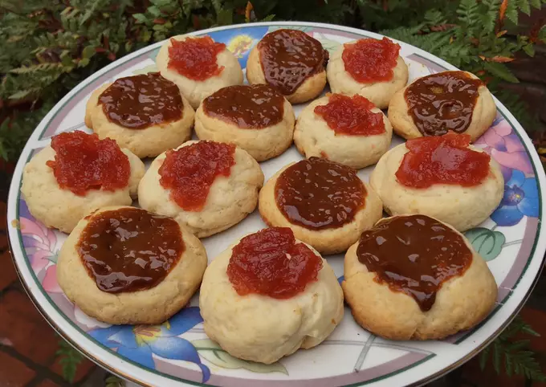

- Ingredientes:
- 20 raciones
- 1 huevo
- 1 taza azúcar impalpable
- 1/4 taza aceite
- 1/4 taza leche
- 1 y 1/2 tazas harina 0000
- 1 cda polvo de hornear
- Pizca sal
- Ralladura de limón
- Chorro esencia de vainilla
- C/n dulce de membrillo, de batata o dulce de leche
- En un bowl, mezclar el azúcar con el huevo. Si no tienen impalpable, sustituir por 1/2 taza de azúcar normal.
- Añadir los ingredientes líquidos (aceite, leche, esencia de vainilla) y la ralladura de limón.
- Agregar la harina mezclada con el polvo de hornear y la sal, amasando todo hasta formar una masa homogénea. Si les queda muy líquido agregar más harina y si les queda muy seco más leche.
- Hacer bollitos iguales con la masa y colocarlos en una asadera enmantecada y enharinada. Con el dedo aplastar el centro y con una cucharita agregar el relleno que quieran (dulce de leche, de membrillo o de batata). Al dulce de membrillo o batata yo los aplasto con un tenedor para que se forme una pasta y sea más manipulable.
- Mandar al horno (precalentado) a 180 grados durante 25 minutos aprox., o hasta que el piso dore.
- Espero sus fotos de cuando los hagan!
- Les dejo mi receta con harina integral: https://cookpad.com/uy/recetas/13499945-pepasojitos-integrales?invite_token=LCreqAQchm9jFeuo2HwkeNTd&shared_at=1598490178